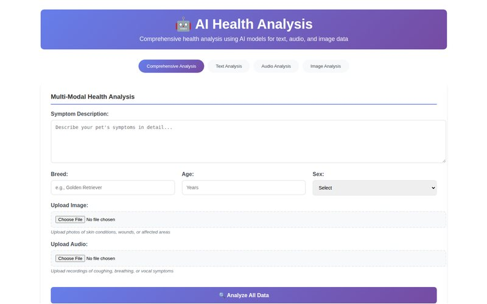

Text
Bio_ClinicalBERT + 256-unit head · 20 conditions
63.8%
Held-out test accuracy, split by dog. Symptom text was generated from diagnoses with rules; a noisier, more realistic run scored 42.2%.
AI & Machine Learning Engineer · Cairo, Egypt
From data collection and honest evaluation to web apps people can actually use. My graduation project fuses text, audio and image models into one dog-health assistant.
Featured · Graduation project
Describe the symptoms, upload a photo, record a sound. Three deep-learning models run behind an Express and Flask app, and a rule-based step merges them into one report with likely conditions, an urgency level and next steps.
Bio_ClinicalBERT + 256-unit head · 20 conditions
63.8%
Held-out test accuracy, split by dog. Symptom text was generated from diagnoses with rules; a noisier, more realistic run scored 42.2%.
Frozen YAMNet embeddings + MLP · 8 sound classes
71.9%
Test accuracy with macro-F1 0.71 on 185 held-out clips. Weakest class: normal playing (recall 0.33).
EfficientNet-B0, frozen backbone + trained head · 9 classes
73.2%
Test accuracy on 1,752 held-out images merged from 20+ public datasets. The 94.1% cross-validation figure uses gradual unfreezing, a different setup.

Selected work
Every project has its code on GitHub with a short write-up. Six also run live in the browser.
No project matches that search.
About
I collect and clean data, train and honestly evaluate models, and wrap them in web apps. I care about the parts that make ML trustworthy: leak-free splits, class imbalance, reporting held-out results, and being upfront about what a model can't do.
These projects come from my computer science studies and my graduation project. Right now I'm continuing to develop Pawlytics, exploring vector search and memory-augmented models, and learning React and Docker.
Open to internships, collaboration and project opportunities.